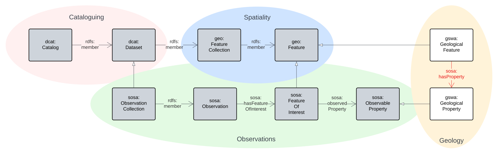
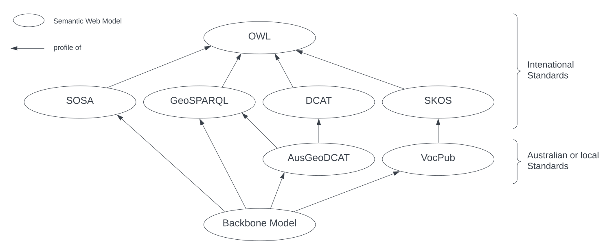

Backbone Model
Intro
{kind=link}

The Backbone Model of this Supermodel is the core model that all Component Model instances must conform to. This means that all data in all Component Model instances must pass the Backbone Model validator.
This model is mostly just a profile of particular Background Models, that is, it doesn't introduce much novel modelling but instead mainly selects elements from existing models and mandates particular patterns of use, such as requiring certain properties to be present.
For example, this Model profiles GeoSPARQL, a well-known model used to model spatial objects, and indicates that instances of GeoSPARQL's Feature class are modelled to be collected in FeatureCollection classes.
This model only introduces two novel classes at the highest level:
Geological Feature- A geospatial
Featurethat is defined by its geological properties
- A geospatial
Geological Property- An observable quality (property, characteristic) of a Geological
Feature
- An observable quality (property, characteristic) of a Geological
Specialised parts of the total modelling regime within this Supermodel are handled by Component Models, not this Backbone Model. For example, specialised types of man-made Feature are defined in the Sites & Admin Features component model.
Examples
An example of dummy data that is valid according to this BackBone Model's validator:
# this is a Geological Feature
<http://example.com/gf/0001>
a gswa:GeologicalFeature ;
.
# the Feature above is part of a Collection
<http://example.com/col/ABC>
rdfs:member <http://example.com/gf/0001>
.
# the Collection above is part of a Dataset
# which is themed as being about Geochronology
<http://example.com/dataset/X>
rdfs:member <http://example.com/col/ABC> ;
# Geochronology
dcat:theme <https://linked.data.gov.au/def/anzsrc-for/2020/370502> ;
.
An example of invalid dummy data:
# this is a Geological Feature
<http://example.com/gf/0001>
a gswa:GeologicalFeature ;
.
# the Feature is indicated as being a member of a Dataset
# but no Feature Collection instances are given
<http://example.com/dataset/X>
rdfs:member <http://example.com/gf/0001> ;
.
Profile Definition
This model is formally defined as a profile of a number of standards in the profile definition:
This can be summarised like this:
- The Backbone Model is a profile of SOSA, GeoSPARQL, AnzGeoDCAT & VocPub and, through them, DCAT, SKOS. All of these are, in turn, profiles of OWL
- see the figure below
- It contains multiple profile resources:
- see the table below
This model's profile hierarchy is as follows:

The profile resources and their roles are as follows:
| Resource | Role |
|---|---|
| Profile Declaration | profile definition |
| Validator | Validation |
| Compounded Validator | Validation |
| this documentation | Specification & Guidance |
Validator
This validator only tests for specific rules encoded within this Backbone Model.
To test data for full conformance to this Backbone Model and all the things that this Backbone Model profile, such as GeoSPARQL, VocPub etc., use the compounded validator:
This validator contains the Backbone Model validator and all dependent validators too.
Requirements
This Backbone Model ensures that the following requirements of data are met:
| ID | Title | Description |
|---|---|---|
| R01 | Individually managed collection. of data must be modelled as dcat:Dataset instances | Datasets are defined, described and registered in a catalogue |
| R02 | Datasets must have basic metadata | Datasets, modelled as dcat:Dataset instances, must have the following properties recorded: dcterms:title, dcterms:description, dcterms:created , dcterms:modified, dcat:contactPoint, dcterms:publisher (this will usually be GSWA) |
| R03 | ||
| ... | ||
| RXX | Geospatial objects must be modelled as geo:Feature instances | Features have spatial projections as Geometries and may have spatial relations to other Features as well as non-spatial relations to other class instances |